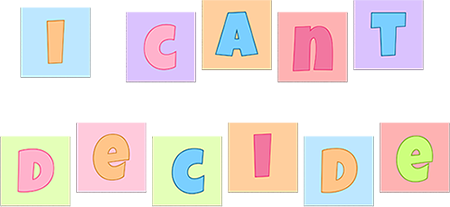
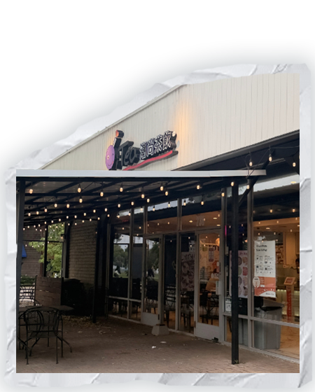
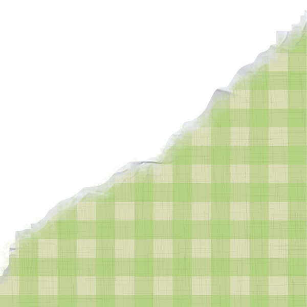
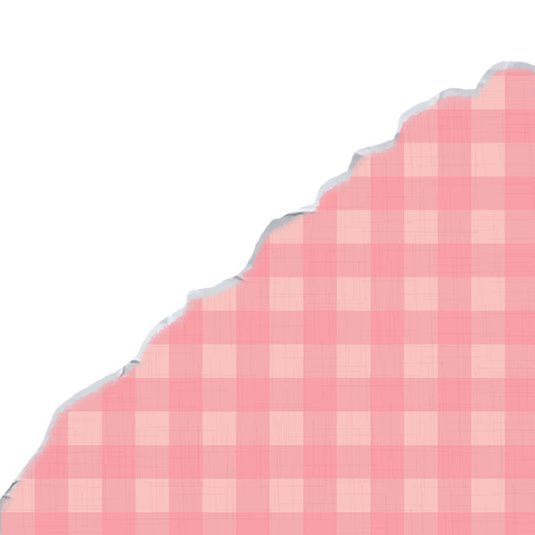

Dear diary… I can’t decide

so many options...

sharetea has so much varieties and the sweetness level is not that sweet, which is perfect for me! but, it's expensive...

love my OG spot and always will be my favorite! but i'm always sticking to my favorite...should i try something new?


